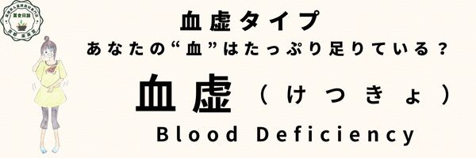

血虚タイプ
体質 血虚タイプ
疲労過度による貧血体質の「血虚タイプ」
めまいや立ちくらみがしたり、顔色がさえないあなたは「血虚」体質です。
体質の説明、主な特徴
痩せ気味。顔色は青白く土気色。
透き通ったような肌ですが皮膚が乾燥し、肌荒れしやすく、髪にもツヤがなく抜け毛、切れ毛、枝毛になりやすい。
大便はコロコロ。
生理周期は大幅に遅れ、量は少ない傾向。
貧血、めまい、目がかすむ、疲れやすい。
動悸や手足のシビレ。
まぶたの痙攣や足がつりやすい。
なりやすい不調・病態（からだとこころ）
貧血や生理に関する異常（無月経、希発月経、月経過少、生理不順、更年期）。
痺れ、麻痺、神経炎、筋肉痛、便秘。
色盲、夜盲症、近視、遠視、乱視、眼精疲労、脱毛、皮膚乾燥、アトピー。
循環器障害、不整脈、脳貧血性めまい、低血圧、不眠、健忘症、認知症、脳性マヒ、アルツハイマー、精神不安（情緒不安定）
爪の異常。
舌の特徴（正常との比較）
【正常な舌の特徴】
- 色：淡紅色（健康的な薄い赤）
- 舌苔：うすく白く、均一に分布
- 形：舌は適度な厚さで、輪郭がはっきり
- 舌質：潤いがあり、ヒビ割れなし
- 舌下静脈：ほとんど目立たない
正常な舌（画像）

血虚の舌（画像）

他の体質との関連
「血」の不足は、「脾虚」や「腎陽虚」が原因の場合もあり、「脾虚」や「腎陽虚」の特徴もある。
「血」の流れが悪い「血瘀」の人も、部分的に「血虚」になっている。
また、「気滞」の人も「血虚」にもなりやすい。
養生ポイント
子宮筋腫などで出血量が多い場合、それを治療することが先決。
また、「脾虚」や「腎陽虚」で「血」が作れない事も多いので、「脾虚」や「腎陽虚」の解決もいっしょに！
未病先防…１
積極的に「血」を増やす対策が大切！
なつめ・金針菜・クコの実・ニンジン・小松菜・ほうれん草・ひじき・牛・豚・鶏のレバー・栗・胡桃・黒ゴマ・黒きくらげ・松の実など「血」をつくる食材を積極的に摂りましょう。
…但し摂り過ぎは胃腸に負担をかけるので禁物。
特に生理中は「血」を補うなつめなどを使った食事や薬膳茶、薬膳スープなど！
未病先防…２
正しい睡眠が「血」を増やします。夜更かしは禁物で１２時までには寝ること。
血は陰なので、「陰」の作用が強い夜間に充分睡眠をとることで補われます。
そして昼間はよく動いて「陽」を高め、陰陽の気のバランスを整えること。
特に女性は生理中の夜更かしは禁物。
既病防変
少ない「血」の回転数を上げること。
巡りがよければ、充足状態をつくれます。
巡りをよくするためには、「血」は「気」とともに動くので、「血瘀」や「気滞」の養生法などを参考にしましょう！
経絡/ヨガ/運動処方
脾経・胃経、肝経、肺経、心経。
サウナや激しい運動など、多量の汗をかくものは控えめに。軽い全身運動。あせらず、少しずつ体力をアップしていくことが大切。
効果的なツボ=肺兪、心兪、肝兪、脾兪、腎兪、三陰交・血海・膈兪など
効果的なヨガ＝太陽礼拝A（スーリヤナマスカーラ）など
薬膳施治
補血養血（ほけつようけつ）
胃腸の働きを良くして血を補う。
おすすめの食材
ライチ、くるみ、黒きくらげ、ほうれん草、にんじん、豚肉、羊肉、レバー、スッポン、なまこ、トマト、落花生、ヒラメ、いかなど。
血を補うもの。ただし食材には温・熱・平・涼・寒の五つの性質があります。
今の自分の体質をチェックし、寒熱虚実の傾きを把握したうえで、そのバランスを中庸に整えてくれる食材をとるようにしましょう。
良いと言われる物でもそればっかり摂り過ぎるのは良くありません。
おすすめ商品（カテゴリーリンクで対応）
- なつめ薬膳茶
- 枸杞とバラ 養眠茶
- 健やか茶
- 増血美肌茶
- 肝腎かなめ茶
- 全部食べる薬膳茶（桂棗黒豆茶）
- いろいろお豆のお汁粉セット
- なつめ
- 金針菜
- 白きくらげ
- 黒きくらげ
- 枸杞の実
- 竜眼
- 蓮の実
- 松の実
- 四物湯スープセット
- 手脚氷凍鍋セット
- 薬膳火鍋紅白スープセット
- ほっこりポカポカあたため乃湯
注意するもの
どちらかというと寒・涼性の摂り過ぎには注意。
摂ると良い四気・五味・帰経食材
性：平性 味：甘味・鹹味・酸味 帰経：肝・心・腎・胆・小腸・膀胱
国際中医師からのアドバイス
心身が疲れすぎないこと、消化吸収しやすい物を食べること、しっかり睡眠をとること。
…ムリせずコツコツ続ければ回復しますよ。